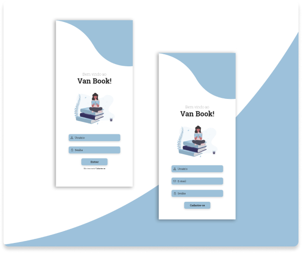
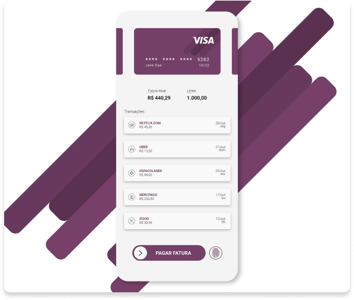
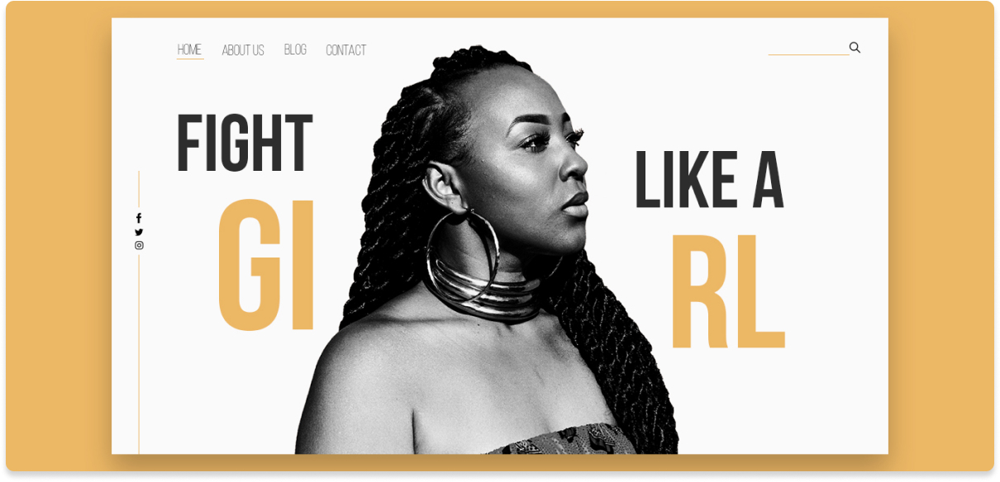

Kelly
Trabalhos
Sobre Mim
Currículo
Olá! Me Chamo Kelly, sou uma UX & UI Designer de São Paulo. Como eu posso ajudar você hoje?
Trabalhos
 

© Kelly. Feito por Kelly Lima - Todos os Direitos Reservados.